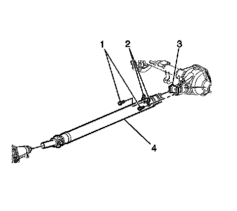
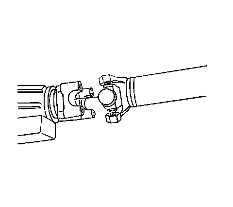
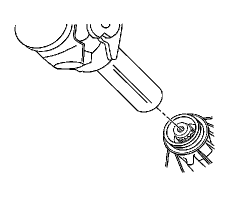

Rear Propeller Shaft Replacement
Rear Propeller Shaft Replacement
Removal Procedure
Important: Observe and accurately reference mark all driveline components relative to the propeller shaft and axles before disassembly. These components include the propeller shafts, the drive axles, the pinion flanges, the output shafts, etc. All components must be reassembled in the exact relationship to each other as they were when removed. In addition, published specifications and torque values, as well as any measurements made prior to disassembly must be followed.
1. Raise the vehicle. Refer to Lifting and Jacking the Vehicle.

2. Reference mark the propeller shaft to the rear axle pinion yoke.
3. Reference mark the propeller shaft to the transmission or transfer case.
4. Remove the bolts (1) and the yoke retainers (2) from the rear axle pinion yoke (3).
Notice: When removing the propeller shaft, do not attempt to remove the shaft by pounding on the yoke ears or using a tool between the yoke and the universal joint. If the propeller shaft is removed by using such means, the injection joints may fracture and lead to premature failure of the joint.

5. Slide the propeller shaft forward in order to disconnect the propeller shaft from the rear axle pinion yoke.

6. Slide the propeller shaft rearward in order to disconnect the propeller shaft from the transmission or transfer case.
7. Remove the propeller shaft from the vehicle.
Installation Procedure
1. Inspect the splines of the slip yoke for a sufficient coating of lubricant. If the splines of the slip yoke do not have a sufficient coating of lubricant, lubricate the shaft with lubricant GM P/N 12345879 (Canadian P/N 10953511) or with an equivalent lubricant meeting GM specification 9985830 (RWD w/4 speed Automatic Transmission).
2. Install the propeller shaft into the transmission or transfer case.
Align the reference marks made during removal.

3. Install the propeller shaft (3) to the rear axle pinion yoke (4).
Align the reference marks made during removal.
Notice: Refer to Fastener Notice.
4. Install the yoke retainers (2) and bolts (1).
Tighten the yoke retainer bolts to 25 N.m (18 lb ft).
5. Lower the vehicle.